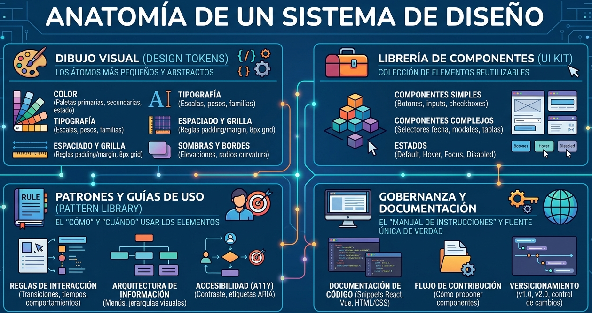

Texto
Como futuros ingenieros de software, su objetivo no es solo "dibujar pantallas", sino construir sistemas escalables, mantenibles y coherentes. Para ello, hoy desglosaremos el estándar de la industria: los Sistemas de Diseño.
Concepto y Origen
Un Sistema de Diseño no es solo una guía de estilos; es una biblioteca de componentes reutilizables, guiada por estándares claros, que pueden combinarse para construir cualquier número de aplicaciones.
Un Sistema de Diseño es pasar de ver interfaces como "dibujos" a verlas como arquitectura de software orientada a componentes. Un sistema de diseño no es un entregable estático (como un PDF de normas gráficas), sino un ecosistema vivo que sirve como "fuente única de verdad" (Single Source of Truth) para diseñadores y desarrolladores.
Aunque el concepto ha evolucionado desde los manuales de identidad visual de los años 60 (como los de la NASA), el enfoque moderno para software fue popularizado por Nathan Curtis y consolidado por equipos en empresas como Airbnb y Google. Curtis define el sistema de diseño no como un proyecto, sino como "un producto que sirve a otros productos".
¿Por qué y para qué usar un Sistema de Diseño?
- Consistencia: Evita que el usuario encuentre tres tipos de botones diferentes en la misma plataforma.
- Eficiencia: Los desarrolladores y diseñadores no "inventan la rueda" cada vez; eligen componentes de la librería.
- Escalabilidad: Permite actualizar un componente en un solo lugar y que el cambio se refleje en todo el ecosistema de la aplicación.
Un Sistema de Diseño es la aplicación del principio DRY (Don't Repeat Yourself) al mundo de la interfaz. Reduce la deuda técnica y permite que el equipo de desarrollo se enfoque en la lógica de negocio en lugar de discutir el tamaño de un botón.
Anatomía de un Sistema de Diseño
A continuación, profundizamos en sus componentes estructurales. Podemos desglosar un sistema de diseño en cuatro partes críticas que garantizan que el software sea coherente y escalable:

1. Diseño Visual (Design Tokens).- Son los átomos más pequeños y abstractos del sistema. En lugar de usar valores "hardcodeados" (como #FF5733), utilizamos variables. Importancia técnica: Los tokens permiten que, si la marca cambia de color, solo se actualice una variable y se refleje en toda la aplicación (web, iOS, Android).
-
Color: Paletas primarias, secundarias y de estado (error, éxito, alerta).
-
Tipografía: Definición de escalas, pesos y familias.
-
Espaciado y Grilla: Reglas de padding, margin y el sistema de columnas (ej. 8px grid).
-
Sombras y Bordes: Elevaciones y radios de curvatura.
2. Librería de Componentes (UI Kit).- Es la colección de elementos de interfaz listos para usar.
-
Componentes Simples: Botones, inputs, checkboxes, radio buttons.
-
Componentes Complejos: Selectores de fecha, modales, tablas de datos, barras de navegación.
-
Estados: Cada componente debe contemplar sus estados: Default, Hover, Focus, Disabled, Loading.
3. Patrones y Guías de Uso (Pattern Library).- Un componente sin reglas es peligroso. Esta parte dicta el "cómo" y "cuándo" usar los elementos.
-
Reglas de interacción: ¿Qué pasa cuando el usuario hace clic? ¿Hay una transición de 200ms?
-
Arquitectura de Información: Cómo se organizan los menús y la jerarquía visual.
-
Accesibilidad (A11y): Estándares para que el componente sea usable por personas con discapacidades (contraste de color, etiquetas ARIA para lectores de pantalla).
4. Gobernanza y Documentación.- Es el "manual de instrucciones" del sistema. Generalmente reside en una plataforma web (como Storybook o Zeroheight).
-
Documentación de Código: Fragmentos de código (React, Vue, HTML/CSS) para que el ingeniero solo tenga que copiar y pegar el componente.
-
Flujo de Contribución: ¿Cómo puede un desarrollador proponer un nuevo componente si el sistema no lo tiene?
-
Versicionamiento: Control de versiones del sistema (v1.0, v2.0) para no romper aplicaciones en producción.
Resumen Estructural
| Parte | Responsabilidad | Rol Principal |
|---|---|---|
| Tokens | Definir constantes visuales. | Diseñador UI |
| Componentes | Construir piezas reutilizables. | Diseñador & Dev Front-end |
| Patrones | Definir la lógica de la experiencia. | UX Designer |
| Documentación | Mantener la fuente de verdad. | Product Manager / Arquitecto |
Ejemplos de Sistemas de Diseño
Explora algunos ejemplos reales de Sistemas de Diseño en la industria. Cada uno de estos enlaces es una excelente fuente de referencia para analizar cómo las grandes empresas documentan sus Design Tokens, Componentes y Patrones de UX.
| Empresa | Nombre del Sistema | URL de Documentación | Enfoque Principal |
|---|---|---|---|
| Material Design (M3) | m3.material.io | Multiplataforma y adaptabilidad (Android/Web). | |
| IBM | Carbon | carbondesignsystem.com | Software empresarial, datos masivos y código abierto. |
| Apple | Human Interface Guidelines | developer.apple.com/design | Experiencia de usuario nativa y consistencia en ecosistema Apple. |
| Atlassian | Atlassian Design System | atlassian.design | Colaboración, productividad (Jira, Confluence, Trello). |
| Adobe | Spectrum | spectrum.adobe.com | Herramientas creativas y consistencia visual compleja. |
| Shopify | Polaris | polaris.shopify.com | E-commerce, paneles de administración y merchants. |
| Salesforce | Lightning (SLDS) | lightningdesignsystem.com | CRM y flujos de trabajo corporativos complejos. |
| GitHub | Primer | primer.style | Herramientas para desarrolladores y legibilidad de código. |
Actividad: Explorando los Sistemas de Diseño
Elije uno de estos sistemas (por ejemplo, Carbon de IBM o Polaris de Shopify) y busca un componente específico, como un "Botón" o un "Modal".
Identifica:
-
Anatomía: ¿Qué partes componen ese elemento?
-
Estados: ¿Cómo cambia visualmente al pasar el mouse (hover) o al estar deshabilitado?
-
Accesibilidad: ¿Qué reglas mencionan para que sea usable por todos?